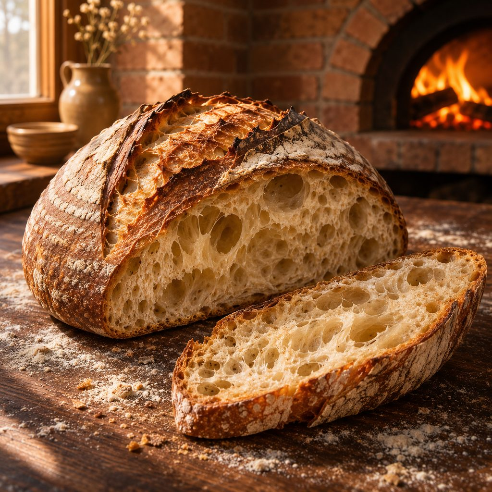
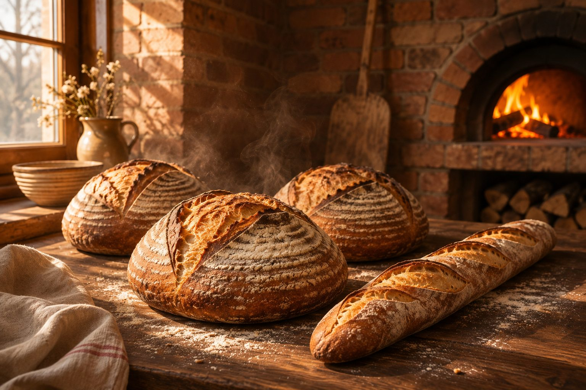
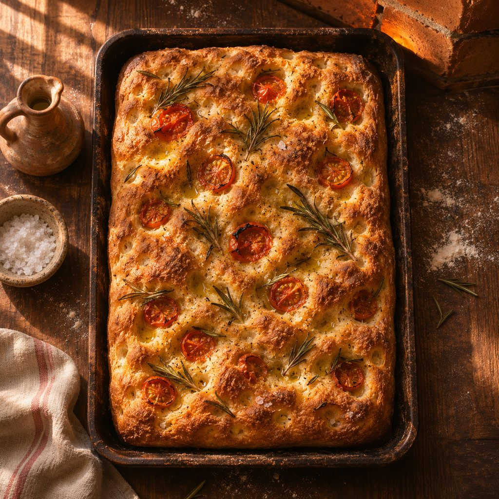
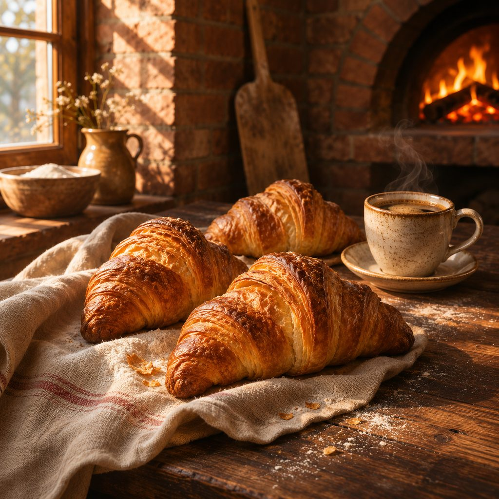
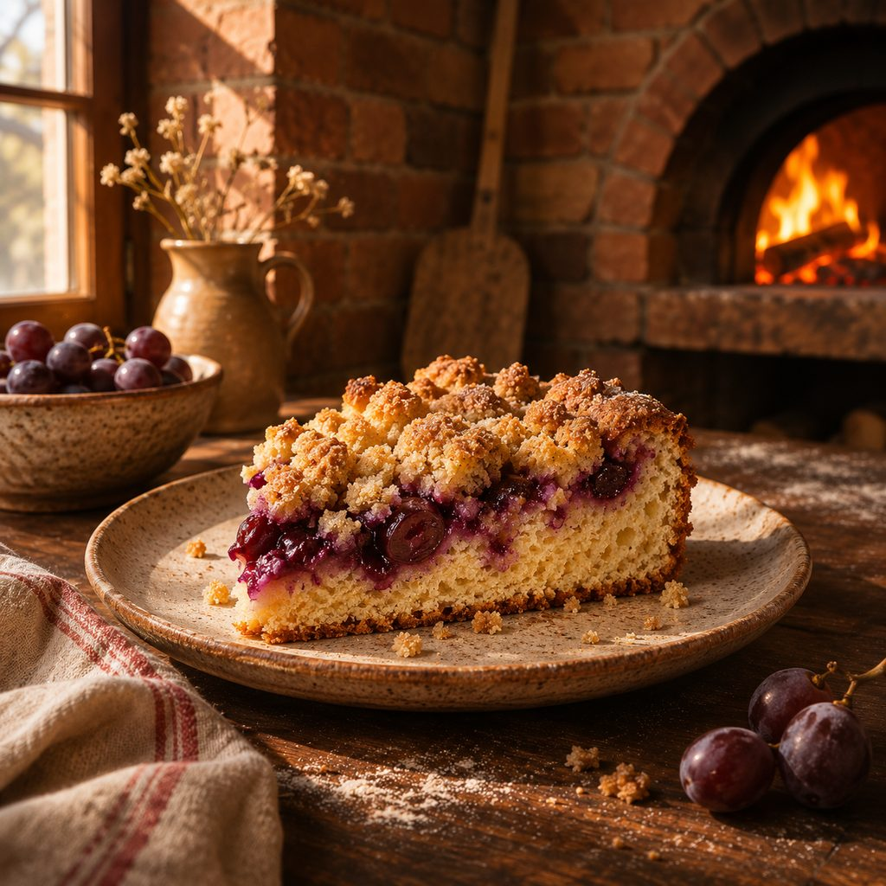
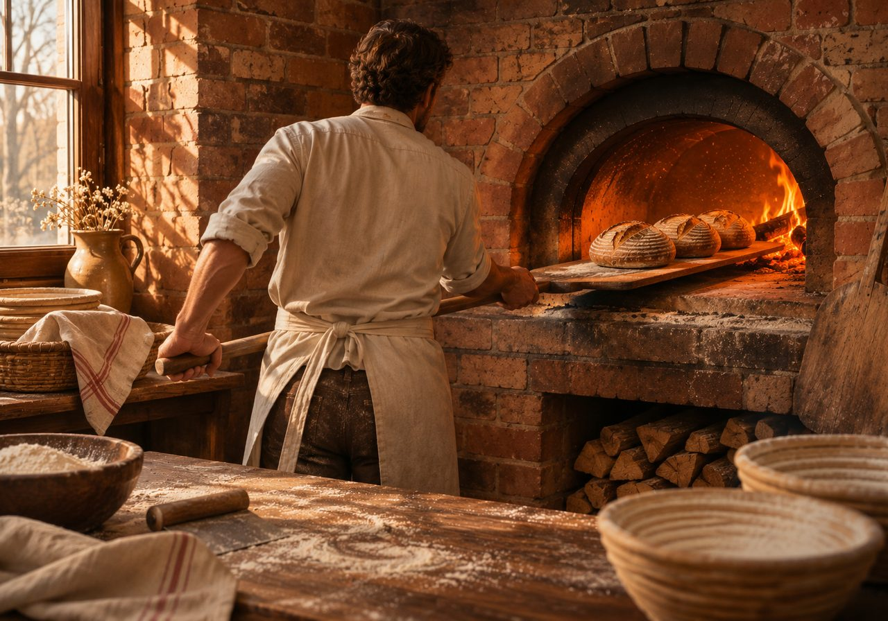

Pão italiano
Casca grossa, miolo aberto. 900 g.
R$ 28● Aberto hoje · 7h às 19h
Padaria de forno a lenha · Cidade Baixa
Fermentação natural de 36 horas, farinha de moinho de pedra e lenha de reflorestamento. Encomende até as 18h e retire quentinho no dia seguinte.
Retirada na loja ou entrega no bairro por R$ 6.

Cardápio de todo dia

Casca grossa, miolo aberto. 900 g.
R$ 28
Alecrim, tomate e azeite. Assadeira inteira.
R$ 34
Manteiga de verdade, 27 camadas.
R$ 12
Receita da nona, com farofa grossa.
R$ 38Como encomendar
Mande a lista no WhatsApp até as 18h. Ex.: "2 italianos e 1 cuca".
Receba a confirmação com o valor e o Pix. Leva poucos minutos.
Retire a partir das 7h ou receba em casa na Cidade Baixa e arredores.
Número de exemplo: este site é uma demonstração.

O forno
O forno de tijolos leva duas horas para chegar a 280 °C. É essa brasa que faz a casca estalar e o miolo ficar úmido por três dias.
Onde estamos
Rua do Exemplo, 123 · Cidade Baixa · Porto Alegre
Terça a sábado, 7h às 19h
Domingo, 7h às 12h
Cidade Baixa, Menino Deus e Bom Fim, de 7h às 10h.